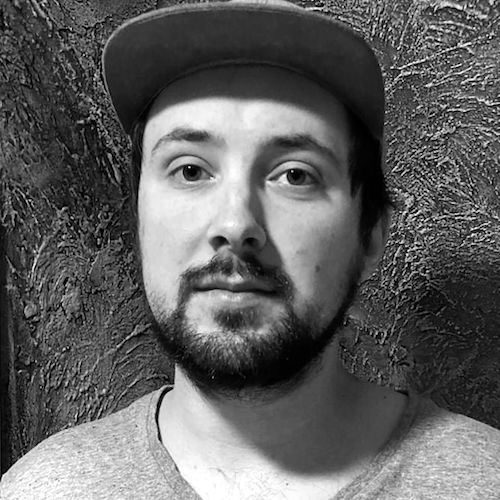

sch1z0.net

Sebastian is the creator of this page and of this art project.
He suffers from paranoid schizophrenia. He would describe it as schizophrenia plus paranoia. In his view, the paranoia started first and was real and happening from 'the outside', when after years
of threats additional typical symptoms of schizophrenia made him even more sick, happening from 'the inside', leading to months of hospitalization. He is under medication now and doing much better, at least, the schizophrenia has become much weaker, but the paranoia still remains like a scar in his memory. More about his person in the BIO. You can support him and his work with a small donation.
© 2023 • Sebastian Prusak • imprint